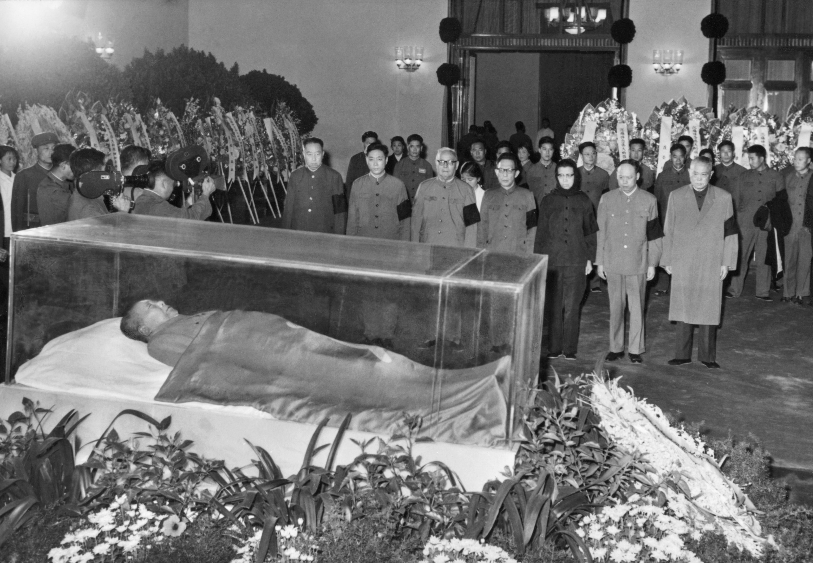

愤怒的人
他在路上走着，只有愤怒。
几个礼拜以前家里进贼了。他们把家里值钱的玩意儿都搜刮了个遍后仿佛还觉得不够，就在客厅里修了个金椅子，天天吃大饼。等家人回来，干粮都被吃完了，家里的田也被糟蹋的差不多了。爷爷带了几个邻居把贼赶出去后，大家一收拾才发现，值钱的东西也没多少了。原来挺大一户，现在差不多该去街上讨饭吃了。
爷爷有点老一辈独有的骄傲。放不下自尊去要饭。他觉得要来的饭不能翻身，他觉得再怎么要也是别人的施舍。他号召大家翻新田，自己种地。只要肯干，他常说，就能把底子找回来。他管这叫勤劳致富。
一开始大家都说好。后来地种起来了，但远水救不了近火，干粮也见底了。家里人开始挨饿了。有人开始觉得不习惯了，想回去之前那种奢侈的生活，就开始偷。一开始还是小偷小摸，后来就有人明抢。抢的人舒服了，被抢的只能忍气吞声，后来实在忍不了了就去告状。爷爷气坏了，七十几岁的老骨头拿起拐棍满屋子追着偷东西的打，一边打还一边骂，说他们跟之前跑进来的那群贼没区别，都是不劳动只吃食的吸血虫。这帮人被打了也不占理，只能仗着他们的地位强词夺理地跟爷爷讨价还价，说当初把贼赶走也有他们一份功劳，不仅他们活该抢吃的，他们的儿子孙子也活该骑在其他人头上。就这么吵了好几个礼拜。
几天前家里人在吵架，没人看门。妖怪从山上冲进家中，几刀砍死了爷爷，又用还沾着血的刀逼着父亲签卖身契。父亲从来都不是什么硬骨头，看到妖怪的青面獠牙早就两腿一软跪在地上了，看刀架到了脖子上裤子都湿了一大片，一口气没喘上来晕了过去。
契约是烫金纸打印的，还镶上了花边和钻石。上面用仿宋体写的很好看，让人觉得内容似乎也不那么令人作呕。生怕他家人看不懂，妖怪还用英文在下面写了一遍。契上说的天花乱坠，什么造工厂，什么自负盈亏，好像签了就立马能致富一样。长兄傻乎乎地就拿着妖怪递过来的羽毛笔沾了点墨水，签了字。妖怪又把契递给其他人，都一个个签了。有的愁眉苦脸，但是刀架在脖子上不签不行；有的看了看觉得似乎也没那么差，就半信半疑地签了；还有的，大多是以前的小偷，被爷爷追着打的，不仅笑呵呵地签了名，还和妖怪勾肩搭背称兄道弟，似乎被开膛破肚的不是自己的爷爷，晕倒的也不是自己的父亲。
唯独他说什么都不签。
因为他心里清楚，签了字以后就没得回头路可走了。地都过给了妖怪，自己拿什么吃饭？造的工厂是自己出力，最后还要到妖怪手里。而且他左看右看，也没看出来妖怪要做的这些事跟他们吃饱饭和翻身有什么关系。况且吃人杀人的妖怪，他觉得怎么都不能信。今天能杀爷爷，他想，要是签了名，明天自己就是他们的盘中餐。
妖怪见说不动他就要砍。他哥哥连忙劝住，一边陪笑一边小声说还得靠他种地呢。
妖怪听了，对他挤出个恶心的笑容，然后在纸上画了个圈，就当他签字了。
巧合的是，第二天，地里粮食正好该收了。妖怪赶紧连上大喇叭，大说特说自己的契如何帮助了种子发芽，粮食丰收。他翻了个白眼，任谁都知道粮食长了一年就该收了，跟那些妖怪的卖身契一点关系都没有。要是妖怪没来，爷爷还活着，他们一样吃的饱饱的。但是没有过去一年所有人的努力，他们谁也别想吃一口饭。
硬要说的话，有了妖怪他们吃的比原本的还少。卖身契规定说八成的粮食都得卖出去换成了废纸才能吃饭，而唯一的买家就是妖怪。就这样，妖怪用废纸换了所有人的八成粮食，再用高价把这些粮食卖给他们自己。本来能吃上所有粮食的人这么一捣腾，就剩五成粮食和一点废纸了。
再过一天，横幅就拉起来了。“让一部分人先吃饱饭”。妖怪说，粮食就这么多，与其所有人都吃不饱，不如让一部分人先吃饱。他抬头看看能吃饱饭的人的名单，基本都是和妖怪称兄道弟的那波人。他看着那波人的脸，好像也有点青面獠牙的意思。
他从那之后就没吃饱过。每天大喇叭里妖怪都播爷爷的勤劳致富多么脱离现实，而卖身契如何拯救了这一家人帮他们致富。妖怪甚至把爷爷的尸体装在水晶棺里，放在客厅的椅子上，将他封为“伟大先驱者”，管卖身契叫“特色勤奋”，说妖怪和家人们是一体的，说要谋求他们家所有人共同的“伟大复兴”，仿佛妖怪在跟随爷爷的路线而不是杀了爷爷似的。每次听到大喇叭，他都忍不住攥紧拳头，手上干活的力度仿佛也大了几分。他不禁想，妖怪真不是人么，居然能这么没脸没皮。
然而，和他不一样，听多了大喇叭，家里人破天荒地也就都信了。他们开始说，幸亏签了契，不然现在还在挨饿。似乎没人记得种子种下去就算没有卖身契也会发芽，似乎也没人记得是人们的勤劳，而不是卖身契，让田地里播满种子的。更重要的是，似乎所有人都忘了，尽管他们每天起早贪黑的种地，最后丰收居然还要交一半给好吃懒做的妖怪。
以后的每一天，他们拿到的收成都在变少。以前的五成变成了四成，然后是三成，现在又变成了两成。他终于受不了了，提笔写下了妖怪以前干的恶事，然后读了出来。
然而身着西装，衣冠楚楚的妖怪和“先吃饱饭”的人看不得他说话了。他们把他的嘴缝上，威胁着如果他再敢不干活瞎说话就把他手缝在锄头上。他哥哥叫的最凶，仿佛他们从来都不是亲人一般。他们试图把他关在家里干活，但是他还是看准了一个晚上翻墙跑了。月黑风高，几乎都没人发现他逃走了，他很快就走到了大道上。他一边快步走，一边在心里对自己发毒誓。
他发誓要回来把妖怪和那群吃饱饭的人全杀了。
他发誓要让其他家里人吃饱饭，要真正翻身。
就算做不到，他想，也要一辈子都和妖怪作斗争。
如果做不到，他想，活着也就没什么意思了。家人都在受苦，自己不可能一个人独自快活。他和那群“先吃饱饭”的人不一样。
想着想着，他偷偷流了滴眼泪。他想，如果爷爷还活着，如果妖怪没进门，如果家人都能团结，那该多好啊！大约家里人都能过上富足的生活，也不用担心有人压迫别人，自己也不用这样一边流浪一边受苦，兴许还能开开心心的过一辈子呢！这么想着，他哭了出来。然而他很快就把眼泪擦干了。不管再怎么哭，爷爷也不会活过来，妖怪也不会同情自己。
他在路上走着，只有愤怒。
-2022.11.13，Rothesay NB，Tony Su
注：这玩意从历史角度而言一点都不准确，单纯一个浅显易懂的表达方式。自己去做研究比看我这个童话故事靠谱。
我是不怕牺牲或流浪的。从前墨西哥革命的时候有Flores Magon三兄弟流浪海外发表文章，俄罗斯革命列宁同志也是远在西伯利亚写《国家与革命》，中国革命也有不少人在海外作支援，甚至马克思本人都是过着朝不保夕的流浪生活；为革命和革命宣传牺牲的同志更是数不胜数。我也认识到我自己的渺小和国家机器的庞大，我自然一个人是推翻不了暴政的。然而，我认为如果人民能被发动起来，不管多么庞大的机器，多么响亮的名号，多么先进的武器都是纸老虎。如果我能在此之中尽一份微薄之力，我也就没什么好遗憾的了。
Click Me For Document Download as .docx File